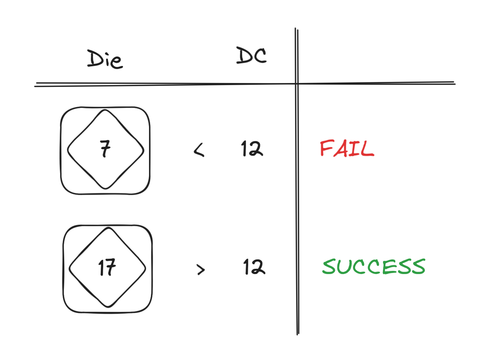

Let’s talk Dungeons & Dragons!
I’ve been spending a bit of time with Baldur’s Gate 3, rolling dice, passing and failing checks.
Usually, to do an ability check you roll a 20-sided die (d20), compare what you rolled with a difficulty class (DC) of the check, and if it’s greater than or equal to the DC — you succeed the check, otherwise you fail.

But what if you roll the die two times and then pick either the higher or the lower number? This is called respectively an advantage and disadvantage in D&D. It feels that the effects of advantage and disadvantage on the chance of success should be similar. Yet, it couldn’t be further from the truth!1
Probabilities
Let’s abstract from a physical die and imagine that a one-shot chance of succeeding a check is \(p \in [0,1]\). In other words, \(\mathbb{P}(\mathrm{success})_\mathrm{default}=p\) which gives us a nice straight-line chart.
Now, let’s consider what happens when we add the advantage. You fail a check with advantage when you fail your one-shot checks both times. Success is a complementary event, which means that
\[ \mathbb{P}(\mathrm{success})_\mathrm{adv} = 1 - (1 - p)^2 = 2p - p^2 \]
Since \(2p \geq p^2\) when \(p \in [0,1]\), you get a nice boost to your chance of success. This can be illustrated with the following chart:
Finally, when it comes to disadvantage, you succeed only when you succeed both your one-shot checks which gives us:
\[ \mathbb{P}(\mathrm{success})_\mathrm{dis} = p^2 \]
The charts for advantage and disadvantage look somewhat symmetrical. What the fuss is about?
Relative effect
Things start to get interesting when we look at the relative effects of advantage and disadvantage2.
First, let’s look at the change in the chance of success relative to the one-shot chance of success:
\[ \mathbb{P}(\mathrm{success})_\mathrm{adv} / p = 2 - p \]
The improvement that comes from the advantage is clamped between \(1\) and \(2\), which is a nice bump but nothing extraodinary. Exactly, as you would expect from a mature game system.
Now, let’s look at the effect of the disadvantage, in particular at how much worse things get with disadvantage compared to the one-shot probability.
\[ p / \mathbb{P}(\mathrm{success})_\mathrm{dis} = p / p^2 = 1/p \]
Just by looking at this formula, it’s clear that things are not looking good. And even more so the smaller \(p\) is!
Plotting these charts side-by-side, there’s much less symmetry than originally anticipated:
Conclusion
In the best/worst-case scenario, when a one-shot chance of success is \(1\) out of \(20\), having advantage would almost double your chances, but with disadvantage you’d be \(20\) times less likely to succeed!
This is an interesting asymmetry in what — at first glance — supposed to be symmetric game mechanics. Can’t say that I learned something useful outside of the world of Dungeons & Dragons, but next time I play Baldur’s Gate 3, I’ll more seriously consider picking disadvantage-inducing spells to debuff enemies rather than just throwing fireballs at them.